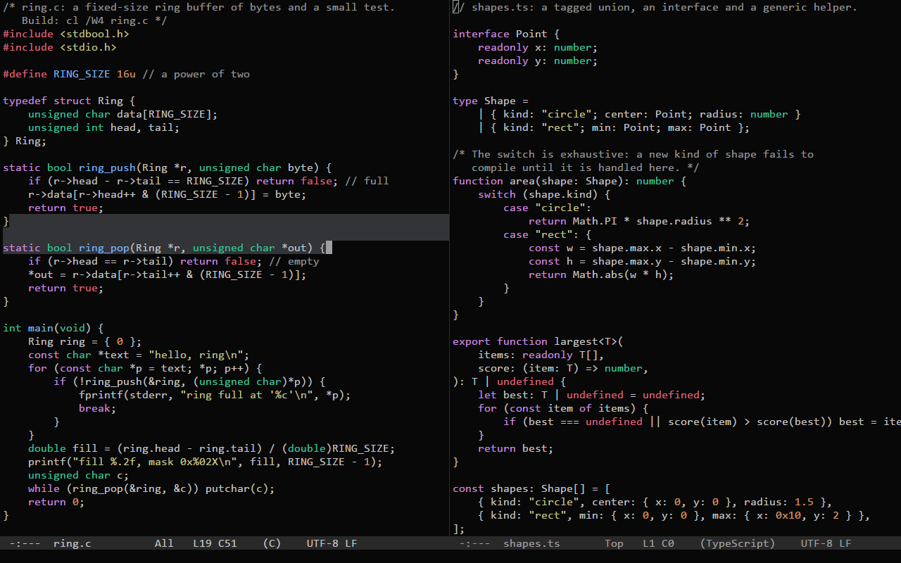
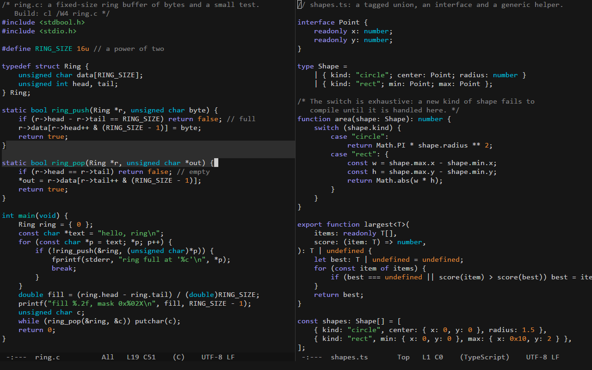
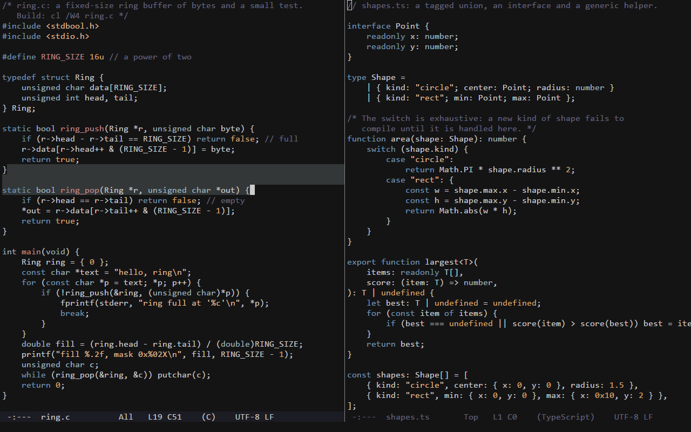
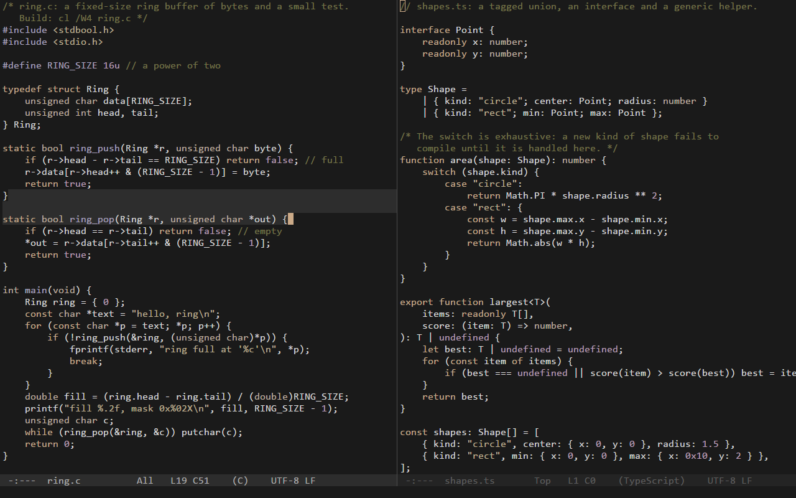

Themes
| moonfly | oxide |
|---|---|
 |  |
| vague | mellifluous |
 |  |
Picking a theme
Five themes are built in: ronin (the default, Jonathan Blow's colors, on the overview), and moonfly,
oxide, vague and mellifluous, ported from Neovim color schemes. Pick one with theme = vague in [settings], or
try them with M-x set-theme, which switches for the session only and completes over every theme there is.
Your own theme
A theme of your own is a file themes\<name>.conf next to ronin.conf (%APPDATA%\ronin\themes\ in a normal install)
with a [theme] block and the colors it sets; a file with a built-in theme's name replaces it. Theme files are watched
like ronin.conf.
[theme]
name = dusk
source = where it comes from
license = its license
author = who made it
[colors]
background = #1b1d22
text = #c8c8c8
keyword = #8fb4d8
comment = #6b7280
Every color is optional: one the theme leaves out keeps ronin's or follows the color it derives from (function
follows keyword, constant follows number, the selected mode line is text on background, and so on; the file
C-c , writes lists every key). A line in ronin.conf's [colors] pins one color over any theme; a ronin.conf
written before themes existed lists them all, so remove that section to let themes show (ronin says how many keys it
overrides).
Themes are colors only, and the built-in ones are dark: ClearType is blended for light text on a dark background.
Credits
The four ported themes take only their color values and names from bluz71/vim-moonfly-colors, oxidescheme/nvim, vague-theme/vague.nvim and ramojus/mellifluous.nvim, each under the MIT license: see THIRD_PARTY.md. The naysayer-theme for Emacs and the Witness color scheme served as references for ronin's own colors.